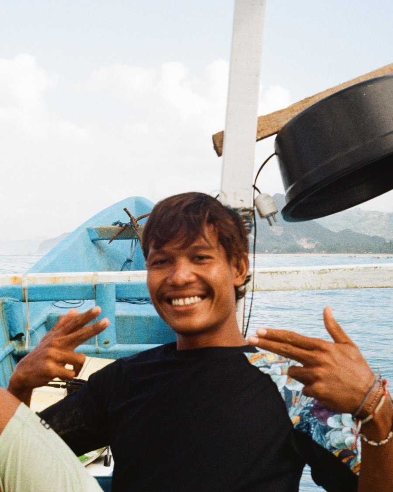

Your InstructorBorn and raised in Lombok, Wawan has been surfing since he was a kid, long before Lombok showed up on anyone's travel bucket list. His home beach is Selong Belanak, where he learned to surf and still surfs most days. He knows this coastline better than his own backyard, because it is his backyard.
"I don't just teach surfing here - I live it."
After years teaching visitors from all over the world, Wawan started his own school with one goal: give travelers a genuine, personal, feel-good introduction to surfing - taught by someone who actually grew up in these waves. Patient, easygoing, and always up for a laugh, he'll have you popping up on your first wave and grinning ear to ear.